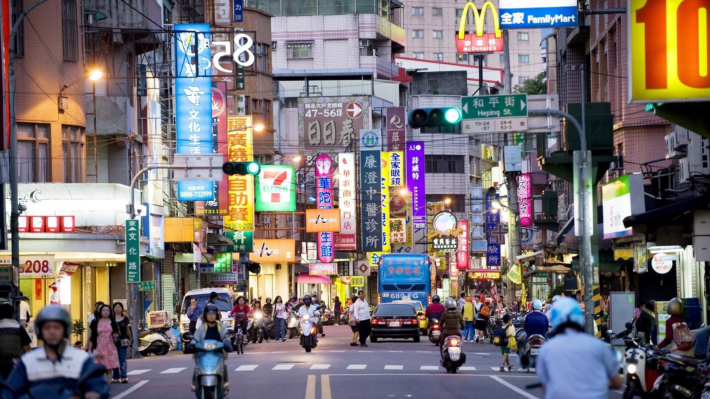

Taiwan
Personal Must-try Food
- Mee Sua
- Fried Rice
- Scallion Pancake
- Xiao Long Bao
- Braised Pork Rice
- Bubble tea

Japan
Personal Must-try Food
- Ramen
- Udon
- Sashimi
- Takoyaki
- Japanese Curry Rice
- Teppanyaki
Bangkok
Personal Must-try Food
- Pad Thai
- Tom Yum Soup
- Pineapple Fried Rice
- Thai Milk Tea
- Omelette Rice
- Wanton Mee